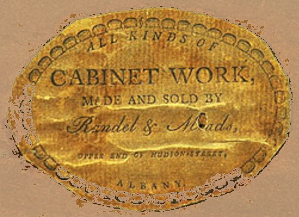

John Meads
Furniture maker John Meads is said to have been born in Polesworth, Warwickshire, England in June 1777. Thus, he would have been the son of Eloias and Sara Alsop Meads. 
He is said to have come to America when he was fifteen and learned the cabinetmaking trade in New York City. In 1802, he was a journeyman and set out to find his fortune in the booming city of Albany.
By the early 1800s, while still in his twenties, John Meads was producing cabinets and other furniture in Albany. In 1802, merchant Tunis Slingerland advertized that a Meads-made cabinet was available at his shop on Market Street. Over several decades, he was involved in a number of furniture-making partnerships perhaps beginning with his father-in-law - who died in 1811.
In April 1804, he married "Loisa (Louisa) Crane" at St. Peter's Episcopal church. Ezra Ames painted portraits of the couple in 1816. At least two of his sons carried on their father's craft.
He was a member and trustee of the Albany Mechanics Society until its dissolution in 1824. He was an officer and/or supporter of a number of Albany-based enterprises including steamboat initiatives, the medical college, and later the Albany Water Works.
His creations are included among the collections of the Albany Institute of History and Art. His fine cabinetry maintains high market value.
The third ward assessment for 1809 valued his house and property on Market Street substantially. In 1810, his household including three children, five young men and three young women were articulated on the Albany census.
In 1813, the first city directory located the furniture shop of John Meads at 97 Market Street. Over the course of a long Albany life, his shop on Chapel Street and residences on North Market were staples of the annual listings.
In July 1818, he escorted a "special coffin" made for the remains of General Montgomery to Troy under the direction of Governor Clinton.
About 1829, Philip Hooker designed a house for him that still stands at 99 Columbia Street.
Louisa Crane Meads died in January 1854 at the age of sixty-nine. Furniture maker John Meads died in 1859 and was buried at the Albany Rural Cemetery where a large monument marks his resting place. His will passed probate in March.